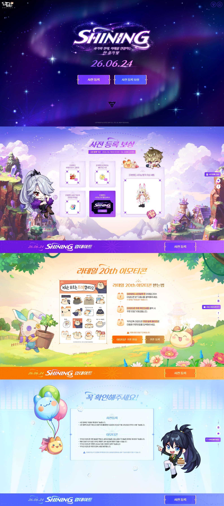

라테일 20주년 샤이닝 쇼케이스 정리, 사전예약 보상과 신규직업 아이돌까지 PC온라인RPG 부활
본 포스팅은 액토즈소프트로부터 원고료를 지원받아 솔직하게 작성된 후기입니다.
다들 학창 시절에 컴퓨터실이나 PC방에서 한 번쯤은 깔아봤을 게임이 있잖아요. 저한테는 그게 라테일이었는데요. 알록달록한 도트 그래픽에 옆으로 통통 뛰어다니면서 콤보를 넣던 그 감성이 어찌나 좋았는지, 시험 끝나면 친구들이랑 모여서 한참을 달리곤 했더라고요.
그런데 이 게임이 어느새 20주년을 맞았다는 소식을 듣고 어안이 벙벙했네요. 한때 PC RPG 게임 순위 상위권을 지키던 게임이 강산이 두 번 바뀔 동안 꾸준히 서비스되고 있었다는 거잖아요. 정말 손에 꼽는 장수 게임이지 싶어요. 오늘은 지난 6월 6일에 있었던 라테일 20주년 쇼케이스 내용이랑, 6월 10일부터 시작된 사전예약 정보를 제 나름대로 정리해서 들고 와봤습니다.
참고로 오늘 이야기는 모바일로 나온 '라테일 플러스'가 아니라, 그 시절 우리가 하던 PC 라테일 본가의 20주년 업데이트 소식이에요. 헷갈리시는 분들이 종종 계셔서 먼저 짚고 갈게요.

'SHINING'이라는 이름을 달고 돌아온 라테일 20주년 사전예약 페이지예요.
이미지 출처: 라테일 20주년 사전예약 페이지(액토즈소프트 제공) · 네이버 본문엔 받아서 재업로드 권장
라테일 20주년, 'SHINING'으로 다시 불을 켰어요
이번 20주년 업데이트의 이름은 '샤이닝(SHINING)'인데요. 지난 6월 6일에 20주년 기념 쇼케이스가 한 차례 진행됐고, 여기서 업데이트 예고랑 각종 프로모션 소식이 공개됐더라고요. 그런데 이게 무려 네 시간 가까이 진행된 대장정이라, 전부 다 옮기기보다는 제가 보면서 '이건 챙겨야겠다' 싶었던 주요 꼭지만 골라서 풀어볼게요.
그리고 그 흐름을 이어서 6월 10일 수요일부터 사전예약(사전등록)이 시작됐고, 20주년 기념 업데이트 본편은 6월 24일에 적용될 예정이라고 해요. 사전예약은 길게 열어두는 편이 아니다 보니, 마음 있으신 분들은 미리 등록해 두시는 게 마음이 편하실 거예요.
신규 직업 '아이돌', 음원이 진짜였어요
이번 쇼케이스에서 가장 시선을 강탈했던 건 역시 신규 직업 '아이돌'이었는데요. 쇼케이스 중간에 아이돌 직업의 스킬 영상이랑 음원을 같이 보여주면서 기대감을 한껏 끌어올리더라고요. 단순히 콘셉트만 잡은 게 아니라 직업 전용 음원을 제대로 뽑았다는 느낌이라, 보는 내내 두근두근했네요.
특히 쇼케이스 종료부에서는 신규 직업 아이돌의 풀 음원을 통째로 감상할 수 있게 풀어줬는데, 이 부분만 따로 찾아 들어보셔도 신규 직업 분위기가 확 와닿으실 거예요. 영상 댓글에 주제별로 마킹이 잘 되어 있어서, 아이돌 구간만 콕 집어 보기에도 편하답니다.
신규 직업 아이돌, 스킬도 스킬인데 전용 음원이 생각보다 훨씬 본격적이더라고요.
샤이닝 토끼 의상에 '스타일룸'까지, 꾸미기 욕심 자극하네요
사전예약 보상으로 주는 '샤이닝 토끼 의상 세트'도 빼놓을 수 없는데요. 20주년 기념 외형이라 그런지 깔끔하게 잘 뽑혀서, 받아두면 두고두고 입을 것 같더라고요. 그리고 이 의상 이야기랑 자연스럽게 이어지는 게 바로 신규 시스템 '스타일룸', 쉽게 말해 옷장 시스템이에요.
스타일룸은 라테일에 있는 다양한 의상을 한 곳에서 모아 입혀볼 수 있는 시스템인데요. 지금 내가 보유하지 않은 의상도 착용해서 미리 모습을 확인할 수 있고, 의상을 계정 단위로 공유할 수 있는 점까지 더해졌다고 해요. 외형 모으는 재미로 게임하는 분들이라면 이 옷장 하나만으로도 다시 손이 갈 만하지 싶네요.
옷장이 생기니까 안 입던 의상까지 괜히 다시 꺼내 보게 되더라고요.
20주년 기념 카카오톡 이모티콘도 챙겨가세요
이번 20주년에는 게임 안 보상만 있는 게 아니라, 라테일 20주년 기념 카카오톡 이모티콘도 기간제로 풀렸는데요. 라테일 특유의 프리링 감성이 그대로 담겨 있어서, 라테일을 추억하시는 분들이라면 톡방에서 쓰는 재미가 쏠쏠할 거예요.
이 이모티콘은 사전예약 홈페이지를 통해 직접 수령하는 방식이라, 사전등록 하시는 김에 같이 챙겨두시면 좋겠습니다. 기간제로 받는 거라 시기를 놓치면 아쉬우니, 사전예약 페이지 들어가신 김에 잊지 말고 받아두세요.
사전예약 페이지에 공개된 보상, 한눈에 정리
쇼케이스에서 나온 이야기에 더해, 사전예약 홈페이지에 들어가 보면 좀 더 구체적인 내용이 공개되어 있는데요. 사전예약에 참여하면 받는 보상이랑 등록을 완료해야 받는 보상이 나뉘어 있으니, 표로 정리해 봤어요.
| 구분 | 내용 |
|---|---|
| 사전예약 참여 보상 | 샤이닝 토끼 의상 세트, 부활의 정수 교환권, 샤이닝 타이틀 습득서 |
| 사전예약 완료 보상 | 라테일 20주년 기념 카카오톡 이모티콘(기간제) — 홈페이지에서 직접 수령 |
| 사전등록 기간 | 2026년 6월 10일(수)부터 |
| 20주년 업데이트 적용 | 2026년 6월 24일 예정 |
업데이트 본편에서 함께 들어오는 신규 콘텐츠도 꽤 푸짐한데요. 메인 챕터 4의 이야기를 확장하는 신규 스토리를 비롯해서, 앞서 이야기한 '스타일룸'과 신규 직업 '아이돌', 그리고 펫을 다양하게 꾸려볼 수 있는 '애완동물 미니빌', 스킬을 입맛대로 특화하는 '스킬 특화' 시스템이 더해진다고 해요. 거기에 스킬창 개선이랑 해상도 업스케일링 같은 편의성 개선도 같이 진행된다고 하니, 오래 쉬었던 분들이 다시 들어와도 한결 쾌적하게 즐길 수 있겠더라고요.
사전예약은 라테일 20주년 사전예약 페이지에서 바로 하실 수 있어요. 보상이랑 일정 안내가 한 화면에 잘 정리되어 있으니, 들어가서 한 번 둘러보시면 좋을 것 같습니다.
오랜만에 PC 온라인 RPG 하나 다시 켜볼까 싶네요
사실 보상도 보상이지만, 라테일은 가만히 켜놓고 분위기만 즐겨도 좋은 게임이거든요. 특유의 아기자기한 분위기랑 귀에 감기는 BGM, 그리고 옆으로 다니면서 콤보를 이어가는 손맛이 여전히 살아 있어서, 요즘 새로 PC 온라인 게임 추천 받고 싶다는 분들한테도 한 번쯤 권해볼 만하지 싶어요.
전투만 있는 것도 아니에요. 채집이나 제작, 낚시 같은 생활 콘텐츠도 알차게 갖춰져 있고, 직업 트리도 다양해서 내 취향대로 골라 키우는 재미가 있거든요. 여기에 고퀄리티 외형으로 캐릭터를 꾸미는 재미까지 더해지니, PC 게임 추천 글 쓸 때마다 이름이 빠지지 않던 이유가 다 있더라고요.
마침 20주년이라고 복귀하거나 새로 시작하는 분들도 부쩍 많이 보이는데요. 오래 한 고인물 분들이 뉴비를 챙겨주는 분위기도 곳곳에서 보이고, 저처럼 가볍게 찍먹만 해보려다 분위기에 휩쓸려 정착하는 경우도 많은 것 같아요. PC RPG 게임 순위를 검색하다 라테일이 다시 눈에 들어왔다면, 이번 20주년이 딱 좋은 복귀 타이밍이지 싶습니다.
예전 그 감성 그대로인데, 보기엔 한층 깔끔해져서 다시 봐도 정겹더라고요.
라테일 20주년 사전예약 정리
마지막으로 핵심만 다시 짚어드리면, 6월 6일 쇼케이스에서 신규 직업 '아이돌', '스타일룸' 옷장 시스템, 20주년 기념 이모티콘 같은 소식이 공개됐고, 6월 10일부터 사전예약이 시작돼서 6월 24일에 20주년 업데이트가 적용될 예정이에요. 사전예약만 해둬도 샤이닝 토끼 의상 세트에 부활의 정수 교환권, 타이틀까지 챙길 수 있으니 부담 없이 등록해 두시면 좋겠어요.
저도 오랜만에 옛날 생각 나서 다시 한번 접속해 볼까 하는데요. 추억의 게임이 20주년까지 잘 버텨준 게 괜히 반갑네요. 라테일과 함께 학창 시절을 보내셨던 분들이라면, 이번 기회에 사전예약 챙겨두시고 6월 24일 업데이트를 느긋하게 기다려보시면 좋을 것 같습니다.